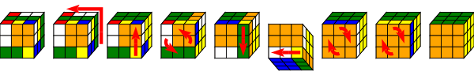

Programm für das fünfte Treffen am 13. August 2015
Gepostet am 28. Mai 15
von Tim Baumann

Tim Baumann (MIT)
Matthias stellt Mercury vor (Folien, mehr zu Typen, Typklassen, Existentiellen Typen).
Tim stellt Lenses vor, anschaulich erklärt mit seinem Haskell-Paket für Zauberwürfel-Diagramme. Die Vortragsfolien gibt es hier und die Codebeispiele auf Github.
Schließlich gibt es auch noch einen Kurzvortrag von Maximilian: Wie kann man in Haskell ansprechende Textmodus-Oberflächen zaubern?